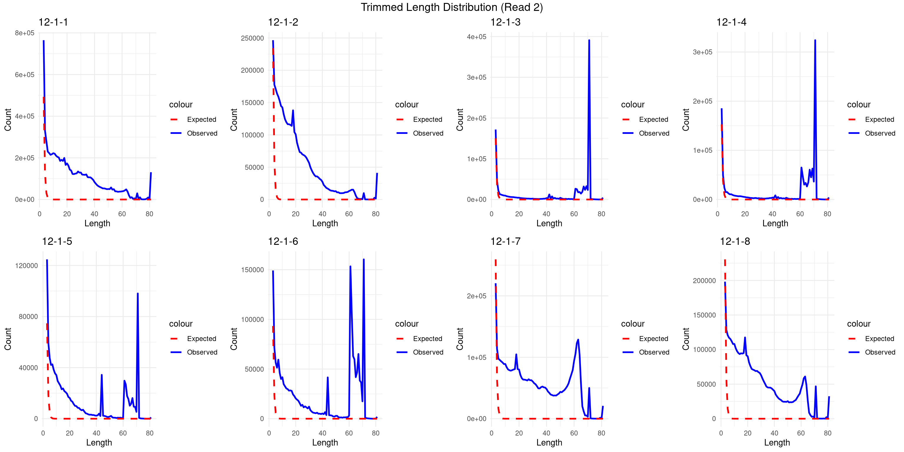

Last updated: 2025-02-28
Checks: 6 1
Knit directory: camseq-m6a/
This reproducible R Markdown analysis was created with workflowr (version 1.7.0). The Checks tab describes the reproducibility checks that were applied when the results were created. The Past versions tab lists the development history.
The R Markdown file has unstaged changes. To know which version of
the R Markdown file created these results, you’ll want to first commit
it to the Git repo. If you’re still working on the analysis, you can
ignore this warning. When you’re finished, you can run
wflow_publish to commit the R Markdown file and build the
HTML.
Great job! The global environment was empty. Objects defined in the global environment can affect the analysis in your R Markdown file in unknown ways. For reproduciblity it’s best to always run the code in an empty environment.
The command set.seed(20250226) was run prior to running
the code in the R Markdown file. Setting a seed ensures that any results
that rely on randomness, e.g. subsampling or permutations, are
reproducible.
Great job! Recording the operating system, R version, and package versions is critical for reproducibility.
Nice! There were no cached chunks for this analysis, so you can be confident that you successfully produced the results during this run.
Great job! Using relative paths to the files within your workflowr project makes it easier to run your code on other machines.
Great! You are using Git for version control. Tracking code development and connecting the code version to the results is critical for reproducibility.
The results in this page were generated with repository version 8c2aff5. See the Past versions tab to see a history of the changes made to the R Markdown and HTML files.
Note that you need to be careful to ensure that all relevant files for
the analysis have been committed to Git prior to generating the results
(you can use wflow_publish or
wflow_git_commit). workflowr only checks the R Markdown
file, but you know if there are other scripts or data files that it
depends on. Below is the status of the Git repository when the results
were generated:
Unstaged changes:
Modified: analysis/trimming.Rmd
Note that any generated files, e.g. HTML, png, CSS, etc., are not included in this status report because it is ok for generated content to have uncommitted changes.
These are the previous versions of the repository in which changes were
made to the R Markdown (analysis/trimming.Rmd) and HTML
(docs/trimming.html) files. If you’ve configured a remote
Git repository (see ?wflow_git_remote), click on the
hyperlinks in the table below to view the files as they were in that
past version.
| File | Version | Author | Date | Message |
|---|---|---|---|---|
| Rmd | 8c2aff5 | XSun | 2025-02-28 | update |
| html | 8c2aff5 | XSun | 2025-02-28 | update |
library(jsonlite)
library(dplyr)
library(gridExtra)
library(ggplot2)
library(grid)
# Define the JSON report file
JSON_REPORT="report_reads/trimming/241217AVITI-He-lab-24JX-12-1-4.json"
echo "JSON report will be saved to: $JSON_REPORT"
# Define input and output files
INPUT_R1="raw_reads/241217AVITI-He-lab-24JX-12-1-4_R1.fastq.gz"
INPUT_R2="raw_reads/241217AVITI-He-lab-24JX-12-1-4_R2.fastq.gz"
OUTPUT_R1="intermediate/trimming/trimmed_reads/PE/241217AVITI-He-lab-24JX-12-1-4_R1.fq.gz"
OUTPUT_R2="intermediate/trimming/trimmed_reads/PE/241217AVITI-He-lab-24JX-12-1-4_R2.fq.gz"
DISCARDED_R1="intermediate/trimming/discarded_reads/241217AVITI-He-lab-24JX-12-1-4_R1.fq.gz"
DISCARDED_R2="intermediate/trimming/discarded_reads/241217AVITI-He-lab-24JX-12-1-4_R2.fq.gz"
cutadapt \
-a AGATCGGAAGAGCACACGTCTGAACTCCAGTCA \
-A AGATCGGAAGAGCGTCGTGTAGGGAAAGAGTGT \
-j 8 \
-m 20 \
-o "$OUTPUT_R1" \
-p "$OUTPUT_R2" \
--too-short-output "$DISCARDED_R1" \
--too-short-paired-output "$DISCARDED_R2" \
--json="$JSON_REPORT" \
"$INPUT_R1" "$INPUT_R2"
https://xsun1229.github.io/camseq-m6a/multiqc_report_raw.html
https://xsun1229.github.io/camseq-m6a/multiqc_report_aftertrimming.html
json_folder <- "/project/xinhe/xsun/camseq/report_reads/trimming"
# List all JSON files in the folder
json_files <- list.files(json_folder, pattern = "*.json", full.names = TRUE)
# Initialize an empty list to store results
results <- list()
# Loop through each JSON file
for (file in json_files) {
# Read the JSON file
json_data <- fromJSON(file)
# Extract general statistics
sample_name <- tools::file_path_sans_ext(basename(file)) # Get sample name from file name
total_reads <- json_data$read_counts$input
reads_too_short <- json_data$read_counts$filtered$too_short
reads_written <- json_data$read_counts$output
reads_with_adapters_R1 <- json_data$read_counts$read1_with_adapter
reads_with_adapters_R2 <- json_data$read_counts$read2_with_adapter
total_basepairs_input <- json_data$basepair_counts$input
total_basepairs_output <- json_data$basepair_counts$output
# Store the results in a data frame
results[[sample_name]] <- data.frame(
Sample = sample_name,
Total_Reads = total_reads,
Reads_Too_Short = reads_too_short,
Reads_Written = reads_written,
Reads_With_Adapters_R1 = reads_with_adapters_R1,
Reads_With_Adapters_R2 = reads_with_adapters_R2,
Total_Basepairs_Input = total_basepairs_input,
Total_Basepairs_Output = total_basepairs_output
)
}
# Combine results into a single data frame
results_df <- do.call(rbind, results)
rownames(results_df) <- seq(1:nrow(results_df))
DT::datatable(results_df,caption = htmltools::tags$caption(style = 'caption-side: left; text-align: left; color:black; font-size:150% ;','Trimming summary'),options = list(pageLength = 10) )p <- list()
for (file in json_files){
json_data <- fromJSON(file)
sample_name <- tools::file_path_sans_ext(basename(file)) # Get sample name from file name
sample_name <- gsub(pattern = "241217AVITI-He-lab-24JX-",replacement = "",x =sample_name)
read_counts <- data.frame(
Category = c("Input", "Output", "Too Short"),
Count = c(
json_data$read_counts$input,
json_data$read_counts$output,
json_data$read_counts$filtered$too_short
)
)
# Bar plot
p[[length(p)+1]] <- ggplot(read_counts, aes(x = Category, y = Count)) +
geom_col(fill = "skyblue") +
geom_text(aes(label = scales::comma(Count)), vjust = -0.5) +
labs(title = sample_name , y = "Count") +
scale_y_continuous(labels = scales::comma)
}
combined <- arrangeGrob(
grobs = p,
nrow = 2,
top = textGrob("Read Counts Before/After Trimming", gp = gpar(fontsize = 14))
)
grid.draw(combined)
| Version | Author | Date |
|---|---|---|
| 8c2aff5 | XSun | 2025-02-28 |
p <- list()
for (file in json_files){
json_data <- fromJSON(file)
sample_name <- tools::file_path_sans_ext(basename(file)) # Get sample name from file name
sample_name <- gsub(pattern = "241217AVITI-He-lab-24JX-",replacement = "",x =sample_name)
adapter_counts <- data.frame(
Read = c("Read 1", "Read 2"),
Count = c(
json_data$read_counts$read1_with_adapter,
json_data$read_counts$read2_with_adapter
)
)
# Bar plot
p[[length(p)+1]] <- ggplot(adapter_counts, aes(x = Read, y = Count)) +
geom_col(fill = "salmon") +
geom_text(aes(label = scales::comma(Count)), vjust = -0.5) +
labs(title = sample_name , y = "Count")
#labs(title = "Reads Containing Adapters", y = "Count")
}
combined <- arrangeGrob(
grobs = p,
nrow = 2,
top = textGrob("Reads Containing Adapters", gp = gpar(fontsize = 14))
)
grid.draw(combined)
| Version | Author | Date |
|---|---|---|
| 8c2aff5 | XSun | 2025-02-28 |
The expected count is a theoretical prediction of random adapter matches:
\[ \text{Expected Count} = \text{Total Reads} \times P(\text{Random Match}) \]
Where: - \(\text{Total Reads}\) is the total number of reads in the dataset. - \(P(\text{Random Match})\) is the probability of a random sequence matching the adapter.
p1 <- list()
p2 <- list()
for (file in json_files){
json_data <- fromJSON(file)
sample_name <- tools::file_path_sans_ext(basename(file)) # Get sample name from file name
sample_name <- gsub(pattern = "241217AVITI-He-lab-24JX-",replacement = "",x =sample_name)
process_trimmed <- function(adapter_data) {
df <- adapter_data$three_prime_end$trimmed_lengths[[1]]
df$total_observed <- sapply(df$counts, function(x) sum(unlist(x)))
df$len <- as.numeric(df$len)
df
}
# Process Read 1 and Read 2
trimmed_read1 <- process_trimmed(json_data$adapters_read1)
trimmed_read2 <- process_trimmed(json_data$adapters_read2)
# Plot for Read 1
p1[[length(p1)+1]] <- ggplot(trimmed_read1, aes(x = len)) +
geom_line(aes(y = total_observed, color = "Observed"), linewidth = 1) +
geom_line(aes(y = expect, color = "Expected"), linewidth = 1, linetype = "dashed") +
#labs(title = "Trimmed Length Distribution (Read 1)", x = "Length", y = "Count") +
labs(title = sample_name, x = "Length", y = "Count") +
scale_color_manual(values = c("Observed" = "blue", "Expected" = "red")) +
theme_minimal()
p2[[length(p2)+1]] <- ggplot(trimmed_read2, aes(x = len)) +
geom_line(aes(y = total_observed, color = "Observed"), linewidth = 1) +
geom_line(aes(y = expect, color = "Expected"), linewidth = 1, linetype = "dashed") +
#labs(title = "Trimmed Length Distribution (Read 2)", x = "Length", y = "Count") +
labs(title = sample_name, x = "Length", y = "Count") +
scale_color_manual(values = c("Observed" = "blue", "Expected" = "red")) +
theme_minimal()
}
combined1 <- arrangeGrob(
grobs = p1,
nrow = 2,
top = textGrob("Trimmed Length Distribution (Read 1)", gp = gpar(fontsize = 14))
)
grid.draw(combined1)
| Version | Author | Date |
|---|---|---|
| 8c2aff5 | XSun | 2025-02-28 |
combined2 <- arrangeGrob(
grobs = p2,
nrow = 2,
top = textGrob("Trimmed Length Distribution (Read 2)", gp = gpar(fontsize = 14))
)
grid.draw(combined2)
| Version | Author | Date |
|---|---|---|
| 8c2aff5 | XSun | 2025-02-28 |
sessionInfo()R version 4.2.0 (2022-04-22)
Platform: x86_64-pc-linux-gnu (64-bit)
Running under: CentOS Linux 7 (Core)
Matrix products: default
BLAS/LAPACK: /software/openblas-0.3.13-el7-x86_64/lib/libopenblas_haswellp-r0.3.13.so
locale:
[1] C
attached base packages:
[1] grid stats graphics grDevices utils datasets methods
[8] base
other attached packages:
[1] ggplot2_3.5.1 gridExtra_2.3 dplyr_1.1.4 jsonlite_1.8.0
loaded via a namespace (and not attached):
[1] Rcpp_1.0.12 highr_0.9 pillar_1.9.0 compiler_4.2.0
[5] bslib_0.3.1 later_1.3.0 jquerylib_0.1.4 git2r_0.30.1
[9] workflowr_1.7.0 tools_4.2.0 digest_0.6.29 gtable_0.3.0
[13] evaluate_0.15 lifecycle_1.0.4 tibble_3.2.1 pkgconfig_2.0.3
[17] rlang_1.1.2 cli_3.6.1 rstudioapi_0.13 crosstalk_1.2.0
[21] yaml_2.3.5 xfun_0.41 fastmap_1.1.0 withr_2.5.0
[25] stringr_1.5.1 knitr_1.39 htmlwidgets_1.5.4 generics_0.1.2
[29] fs_1.5.2 vctrs_0.6.5 sass_0.4.1 DT_0.22
[33] rprojroot_2.0.3 tidyselect_1.2.0 glue_1.6.2 R6_2.5.1
[37] fansi_1.0.3 rmarkdown_2.25 farver_2.1.0 magrittr_2.0.3
[41] whisker_0.4 scales_1.3.0 promises_1.2.0.1 htmltools_0.5.2
[45] colorspace_2.0-3 httpuv_1.6.5 labeling_0.4.2 utf8_1.2.2
[49] stringi_1.7.6 munsell_0.5.0